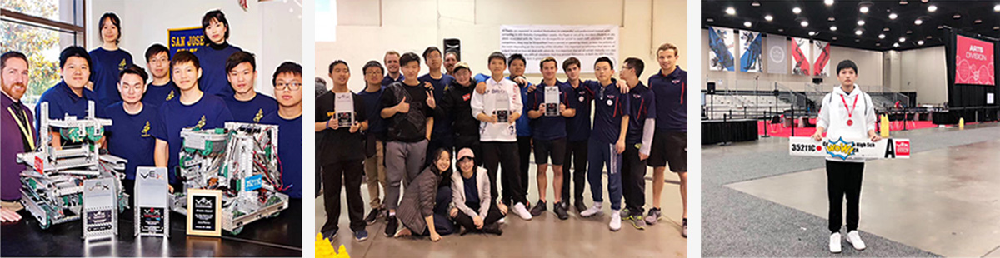

I believe in the power of science and art, which exactly guide me forward.
I began to learn Chinese painting at the age of 7. With a strong passion for artistic creation since childhood, I won’t get tired no matter how long a painting-related activity takes. In the later process of art learning, I had the honor to learn after Xiao Xinmiao, a famous traditional Chinese painter from Sichuan Province. Thanks to his instructions, I made great progress in painting, and my works also won many gold medals in Chinese youth calligraphy and painting competitions. After I got to America, I actively participated in art activities around the world, with a view to pursuing higher artistic attainments and pioneering my own way of art.
On April 27, 2019, as the only young Chinese painter invited by North American Chinese Culture Foundation, I had the honor to visit Harvard Graduate School of Design, Yale University School of Art, Massachu-setts Institute of Technology School of Art Design together with Chinese traditional painters Hu Yilong, Xiao Xinmiao, Zhang Kuohai and other contemporary artists and representatives of Chinese artistic and cultural leaders. Fortunately, my paintings were privileged to be exhibited in Harvard Graduate School of Design and New York Agora Art Gallery. During the exhibition, I had many exchanges with scholars from those art institutes about the Eastern and Western art cultures. At the art symposiums held in Massachu-setts Institute of Technology and Harvard Graduate School of Design, I gave a speech and shared how to view traditional Chinese art and the essence of Chinese culture behind traditional art from a cross-cultural perspective as a representative of the new generation of young artists.
If I compare art to blood deeply rooted in my heart, then technology is like my wings which take me far away. When I was in primary school, I began to learn the building and control of VEX robot. From 2011 to 2012, I participated in VEX robot competition in the Asia-Pacific region and VEX World Championship in the United States on behalf of primary school students in Sichuan Province together with other team members, and we won gold awards for robot building many times. In September 2017, I joined our school’s VEX Robot Club as team leader, and after two months, I led the team to participate in VEX Robot Competition in Los Angeles and won the championship. In February 2018, I led the team to win the second place of California VEX Robot Competition. Then in April of the same year, we qualified for Kentucky VEX World Championship. Seven months later, we won the championship of VEX Robot Competition in Los Angeles again.

As my experience increases with age, I gradually realize the importance of science and technology to the future world. To arouse more adolescents’ interest in science, I organized Sichuan Aier Robot Club to carry out a VEX Robot Demonstration and Experience Activity themed by “Building a Bridge to Dreams and Flying the Wings of Dreams” in remote rural primary schools in Sichuan Province with the help of two enterprises, ten families and teachers engaged in robot research from 4 universities in July 2018. This activity provided students in remote rural primary schools with convenient study tools, improved their learning conditions, broadened their visions and improved their operation, imagination, innovation and cooperation abilities as well as led them to the world of science and technology. In the meantime, the teachers from 4 universities discovered some talented students and persuaded their parents to send their gifted children to primary schools in Chengdu city for exchange study. In this way, those students were able to receive professional robot training, give full play to their talent and change their future.
In July 2018, I went to Chengdu No.7 High School Gaoxin School and the headquarters of Chengdu Huaying Foreign Language Training School to share my creation passion and the charm of VEX robot with domestic students of the same age based on my previous study experience in America, my connection with robots and my experience in VEX robot competitions and world championships, which attracted more students to participate in VEX robot activities, stimulated their technological potential and helped them get closer to their dreams of science and technology.
From September 2018 to April 2019, I led members of Mountain Bluebird Club and Irvine Chinese Intercultural Association in Los Angeles to popularize robot activities among students in Irvine Community every month. In the process of practical operation, those students worked together and discussed creativity together, losing themselves in the world of robots. They showed a strong interest in making robots and a desire to learn. Besides, through sharing and interaction, they gained more friendships.
I hope to better integrate art with technology in the future and I would like to be engaged in smart building and smart city. Hence, I am sure to keep working towards my occupation dreams.